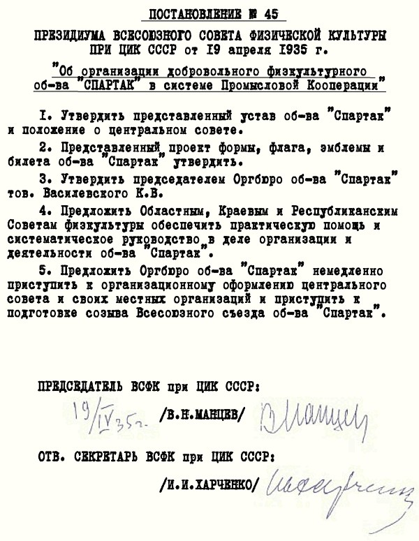

Overview
FC Spartak Moscow [Original Name: Футбольный Kлуб Спартак] nicknamed “Meat”, was found on April 18th 1922, four years after the end of the firs world war. The club was historically a part of the Spartak Sports Society, other teams in the society included HC Spartak Moscow, an Ice Hockey team. But right now the club has no relation to the Spartak Sports Society and is an independent and privately owned organisation. They are Russia’s most successful football club having won 12 Soviet Championships and a record of 9 Russian Championships. They also won 10 Soviet Cups and 3 Russian Cups.
Current Status
Oktrytie Arena is currently FC Spartak Moscow’s home home ground with a capacity of 45,360. Massimo Carrera is the current manager, with Sergey Rodinov as the Chairman and Leonid Fedun as the owner. The team is currently participating in the Russian Premier League, Russia’s first football tier.
Foundation
In the beginning of Soviet football, many governmental agencies like the police, army and railroads created their own clubs, the police had Dinamo Moscow, the army had CKSA Moscow, the railroads had Lokomotiv Moscow. While Spartak was created by a trade union public organisation, so the team was considered to be “the people’s team”. The team was first known as the Moscow Sports Club of Krasnopresnesky District) [original name: Московский Kружок Cпорта], but in 1935 Alexander Kosarev got in contact with Nikolai Starostin and his brothers to develop the team and make it more powerful. The team’s name was changed to Spartak Moscow, Nikolai Starostin says he was inspired by the gladiator-slave who led a rebellion against Rome, Spartacus.
The Rise of a new team in the Soviet Union
Antonin Fivebr is credited as the first head coach of Spartak, during the time the Soviet Top League was established, which Spartak managed to win three times before the beginning of the second world war. During the 1950s Spartak dominated in Russian football, even the Soviet national team which won gold at the Melbourne Olympics in 1956, consisted largely of Spartak players. Spartak’s captain Igor Netto was also the captain of the Soviet national team for nine years. During the 1970s Spartak Moscow hit rock bottom as the club was facing serious issues and was even relegated to the Soviet First league in 1976, but came back to the Soviet Top League after winning the division in 1977. Two years later in 1979 Spartak won the Soviet Top League again, the supporters played a huge role for the players’ morale. The period is considered to be the start of the modern-style fans’ movement in the Soviet Union.
Collapse of the Soviet Union and the birth of a new power in Russian Football
When the Soviet Union collapsed, the Soviet Top League came to an end, as the newly created Russian league was formed. Oleg Romantsev, Spartak Moscow’s coach dominated the nation’s football winning all but one tittle between 1992 and 2001.
20th October 1962 - The Luzhniki Disaster
During a 2-0 win over Dutch side HFC Haarlem, it was -10°C. The Grand Arena of Central Lenin Stadium did not have a roof over the seating at the time. It is believed that a young woman lost her shoe on the stairs and stopped, trying to retrieve it and put it back on, a couple of people also stopped trying to help the fan in need, but the moving dense crowd on the stairs, limited by metal banisters, promptly crushed the, down. People began to stumble over the bodies of those who were crushed in a ‘domino effect’. 66 people died and 61 were injured, it was Russia’s worst sporting disaster and the people who suffered will forever be in the hearts of any Spartak Moscow supporters.

Kit Manufacturers and Shirt Sponsors
| Period | Kit Manufacturer | Shirt Sponsor |
|---|---|---|
| 1979-1987 | Adidas | - |
| 1988 | Adidas | Danieli |
| 1989 | Adidas | JINDO |
| 1990-1993 | Adidas | Unipack |
| 1994-1996 | Adidas | Urengoygazprom |
| 1997-1998 | Adidas | Akai |
| 1999 | Adidas | - |
| 2000-20002 | Adidas | - |
| 2003-2004 | Umbro | Lukoil |
| 2005-Present | Nike | Lukoil |
Affiliated Clubs
Trophy Cabinet
| Club Competition | Winners | Runners-Up | Times Won | Times Runners-Up |
|---|---|---|---|---|
| Soviet Top League | 1936, 1938, 1939, 1952, 1953, 1956, 1958, 1962, 1969, 1979, 1987 and 1989 | 1937, 1954, 1955, 1963, 1974, 1980, 1981, 1983, 1984, 1985 and 1991 | 12 | 11 |
| Russian Premier League | 1992, 1993, 1994, 1996, 1997, 1998, 1999, 2000 and 2001 | 2005, 2006, 2007, 2009 and 2011/2012 | 9 | 5 |
| Soviet Cup | 1938, 1939, 1946, 1947, 1950, 1958, 1963, 1965 and 1971 | 1948, 1952, 1957 and 1981 | 9 | 5 |
| Russian Cup | 1992, 1993/1994, 1997/1997 and 2003 | 1995/1996 and 2006 | 4 | 2 |
| Russian Super Cup | - | 2004, 2006 and 2007 | - | 3 |
| Soviet First League | 1977 | - | 1 | - |
| USSR Federation Cup | 1987 | - | 1 | - |
| Commonwealth of Independent States Cup | 1993, 1994, 1995, 1999, 2000 and 2001 | 1997, 1998 and 2002 | 6 | 3 |
| Ciutat de Barcelona Trophy | 1982 | - | 1 | - |
| Copa del Sol | 2012 | - | 1 | - |